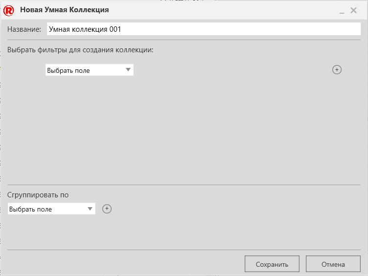

Добавление Умной Коллекции |
|
Вы можете добавить новую умную коллекцию в панель электронного каталога. 1.Перейдите в панель Каталог. 2.Нажмите на ПЛЮС , а затем нажмите Добавить Умную Коллекцию....
 3.В середине Новой умной коллекции, используйте раскрывающиеся меню, чтобы определить первое условие фильтра, например Коллекция - это все модели. 4.Выполните одно или все из следующих действий: ·Чтобы добавить еще один фильтр, нажмите кнопку ПЛЮС а затем используйте раскрывающиеся меню, чтобы определить новое условие логического фильтра, например И тип конвейеры. ·Чтобы определить группу, внизу Новой умной коллекции, используйте раскрывающийся список, чтобы определить группу, например Производитель сгруппирует подходящие товары по производителю. ·Чтобы добавить подгруппу, внизу Новой умной коллекции, щелкните ПЛЮС , а затем используйте раскрывающееся меню, чтобы определить новую подгруппу. 5.Нажмите Сохранять. |